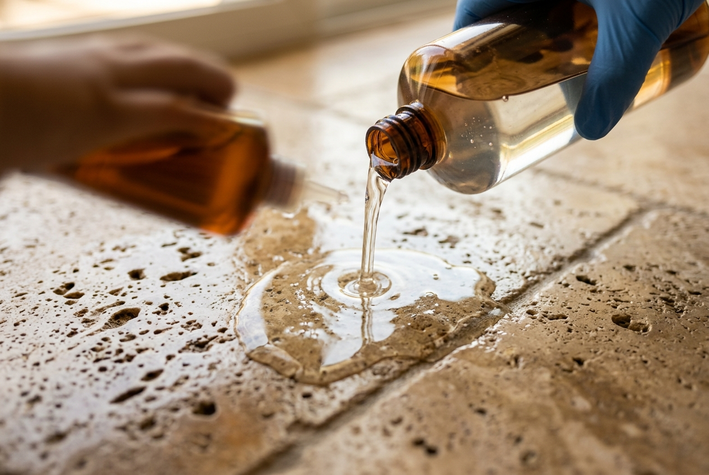
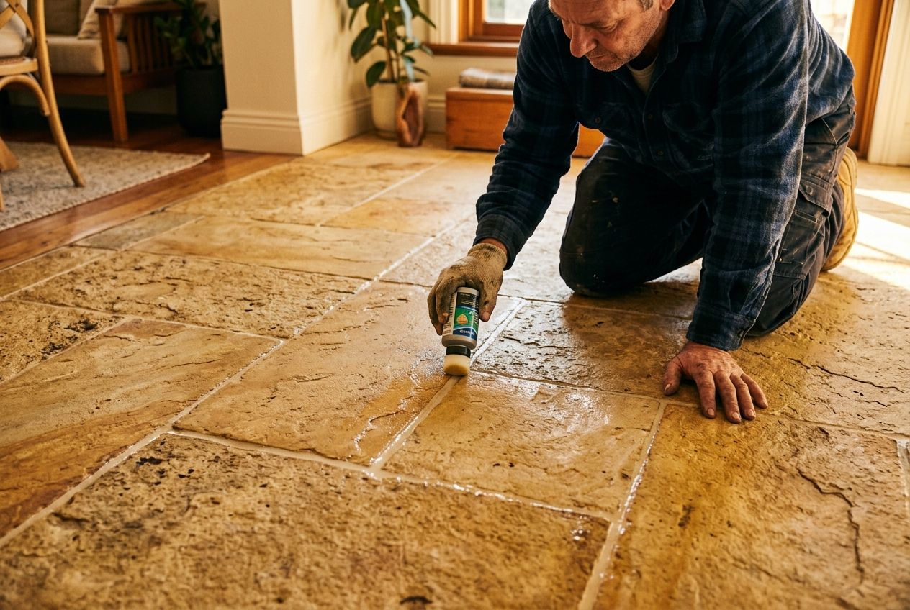

Professional Tile Cleaning & Sealing in Sydney
Whether you use a porous or non-porous tile, ensuring your tiles are properly sealed is the best way to guarantee their longevity. Tiles face threats from stains, deterioration, contamination, and chemical attacks that shorten their lifespan.
At Tile & Stone Cleaners, we offer professional tile cleaning, tile sealing, tile & grout cleaning, tile stripping, tile regrouting, and minor tile repair services across Sydney. Our team has 15+ years of experience protecting surfaces in homes, commercial spaces, and high-traffic environments.
What Are Sealers?
Sealers are liquids containing resins that prevent stains on ceramic, stone, and concrete tiles. They make surfaces resistant to water and oil penetration, acting as an invisible shield between your tiles and the substances that damage them.
We provide porous surface testing to determine the appropriate sealer type for your specific tiles. Not all surfaces require the same treatment -- the wrong sealer can trap moisture, cause discolouration, or simply fail to protect. That's why professional assessment matters.

Types of Sealers
There are two main categories of tile sealers, each suited to different surfaces and situations. Understanding the difference is key to choosing the right protection for your tiles.
Impregnating Sealers
- Sit below the tile surface, not on top
- Deposit solid particles into stone pores
- Don't require scraping before reapplication
- Maintain natural slip-resistant properties
- Last up to 10 years (8 years in saltwater locations)
- Penetrate deeply without affecting colour or sheen
- Don't scuff or wear like topical sealers
- Available in transparent matte or colour-enhanced finishes
Topical Sealers
- Act as a coating or thin film barrier on the surface
- Protect against stains, scratches, and scuffs
- Require more frequent reapplication
- Must be scraped off before new application
- Can change tile colour under UV rays
- Available in silky smooth, matte, or glossy finishes
- Lifespan approximately 3 years
Water-Based vs Solvent-Based Sealers
Beyond the type of sealer, you also need to choose the right base. This affects application ease, odour, environmental impact, and -- most importantly -- how well the sealer protects against different stain types.
Solvent-Based Sealers
Offer deep penetration into the tile surface but are harder to apply and produce a strong odour during application. They repel water effectively but perform poorly against oil-based stains, leaving a gap in your protection.
Water-Based Sealers
Our preferred choice. Environmentally friendly with easier application and no harmful fumes. The key advantage: water-based sealers repel both water AND oil-based stains, giving your surfaces comprehensive protection without compromise.
RecommendedHydrophobic vs Oilophobic Sealers
The final distinction comes down to what your sealer actually repels. This is where many homeowners and even some contractors get it wrong.
Hydrophobic Sealers
Repel water-based substances only -- soft drinks, coffee, tea, and similar liquids. While effective against these common household spills, they offer no protection against cooking oils, grease, or petroleum-based stains.
Oilophobic Sealers
Repel both oil AND water-based substances, providing superior all-round protection. We exclusively use oilophobic sealers because they guard against the full spectrum of stains your tiles will encounter -- from morning coffee spills to cooking oil splatters.
Our PreferenceGrout Line Sealing
While some tiles don't need sealing, grout lines must be sealed irrespective of the tile type. Grout is inherently porous and absorbs limescale, dirt, and grease over time, leading to discolouration, staining, and even structural weakening.
We use impregnating water-based grout sealers that resist both water and oil-based stains. This protects your grout from the inside out, keeping grout lines clean and extending the time between professional cleaning appointments.

How Often Should You Reseal?
Resealing frequency depends on the type of sealer applied, the amount of foot traffic, and exposure to the elements. Here's a general guide:
The Water Test: Not sure if it's time to reseal? Place a few drops of water on your tile surface. If the water absorbs quickly rather than beading up, your sealer has worn through and it's time to reapply. This simple test takes 30 seconds and tells you exactly where you stand.
Industries We Serve
Our tile cleaning and sealing services extend across residential and commercial properties throughout Sydney. We service all suburbs within 60 minutes of Sydney CBD.